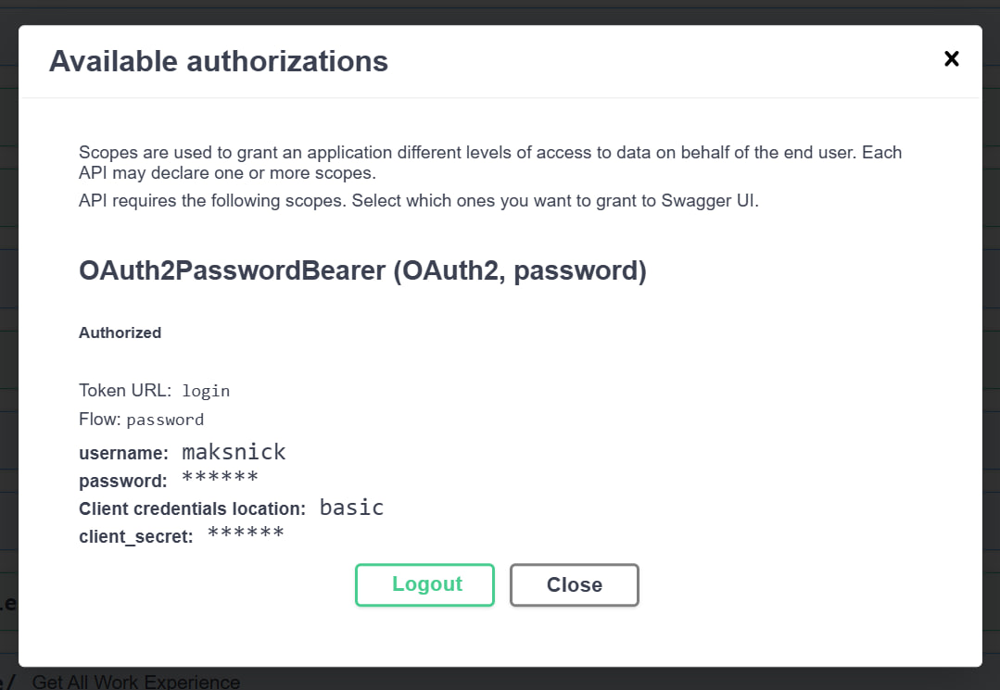
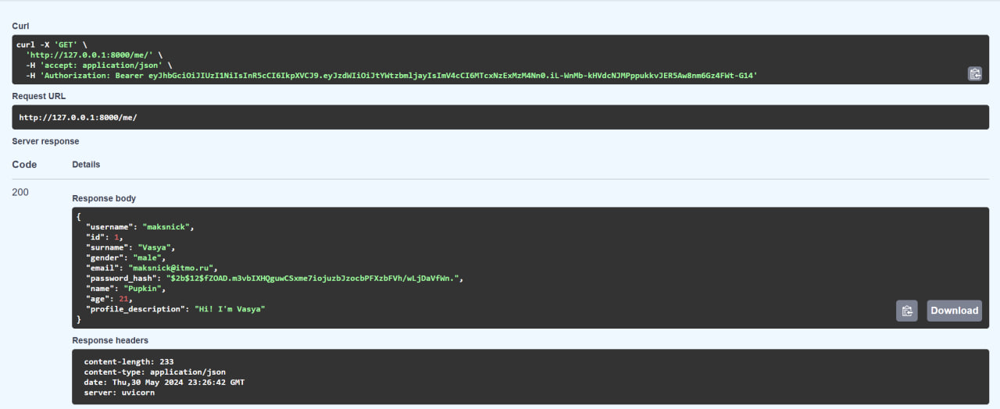
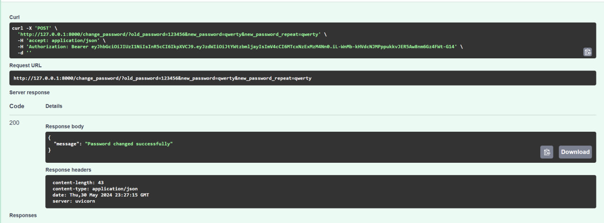
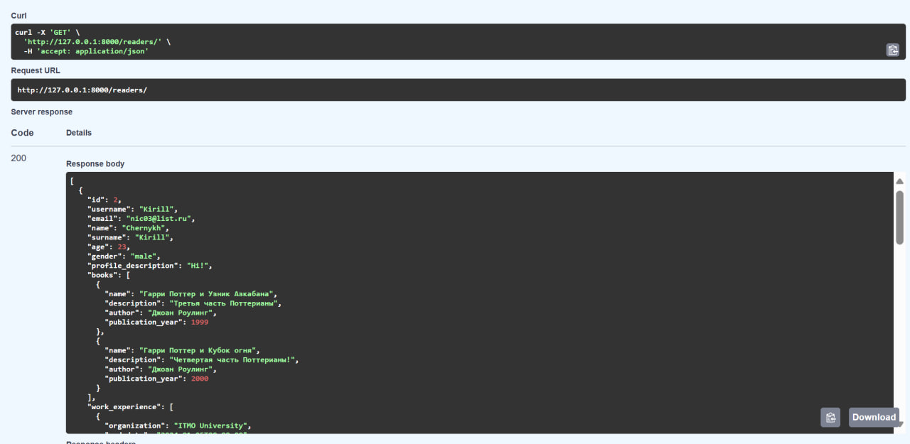

Аутентификация
Дополнительные функции
Для работы регистрации и входа пользователя для начала были написаны функции и переменные для создания токена, а также получения информации о текущем пользователе в системе. Функции хеширования пароля и его проверки сразу были добавлены в базовую модель пользователя.
auth.py
ACCESS_TOKEN_EXPIRE_MINUTES = 30
SECRET_KEY = "SahloFolina"
ALGORITHM = "HS256"
oauth2_scheme = OAuth2PasswordBearer(tokenUrl="login")
def create_access_token(data: dict, expires_delta: Optional[timedelta] = None):
to_encode = data.copy()
if expires_delta:
expire = datetime.utcnow() + expires_delta
else:
expire = datetime.utcnow() + timedelta(minutes=15)
to_encode.update({"exp": expire})
encoded_jwt = jwt.encode(to_encode, SECRET_KEY, algorithm=ALGORITHM)
return encoded_jwt
def get_current_user(
token: str = Depends(oauth2_scheme), session: Session = Depends(get_session)
):
credentials_exception = HTTPException(
status_code=status.HTTP_401_UNAUTHORIZED,
detail="Could not validate credentials",
headers={"WWW-Authenticate": "Bearer"},
)
try:
payload = jwt.decode(token, SECRET_KEY, algorithms=[ALGORITHM])
username: str = payload.get("sub")
if username is None:
raise credentials_exception
except JWTError:
raise credentials_exception
user = (
session.query(models.Reader).filter(models.Reader.username == username).first()
)
if user is None:
raise credentials_exception
return user
Эндпоинты
Для корректной работы аутентификации были созданы следующие эндпоинты:
/registration- POST-запрос на регистрацию/login- POST-запрос на авторизацию/me- GET-запрос на вывод текущего пользователя/change_password- POST-запрос на смену пароля
А также эндпоинты для работы с пользователем-читателем:
/readers- GET-запрос на вывод всех существующих пользователей-читателей/readers/{reader_id}- GET-запрос на вывод конкретного пользователя-читателя (в отличии от /me не выводит пароль)/readers/{reader_id}/add_experience- POST-запрос на добавление опыта работы/readers/{reader_id}/experience- GET-запрос на просмотр опыта работы пользователя
Примеры запросов
Вход в систему: 
Текущий пользователь: 
Смена пароля: 
Получение всех читателей: 